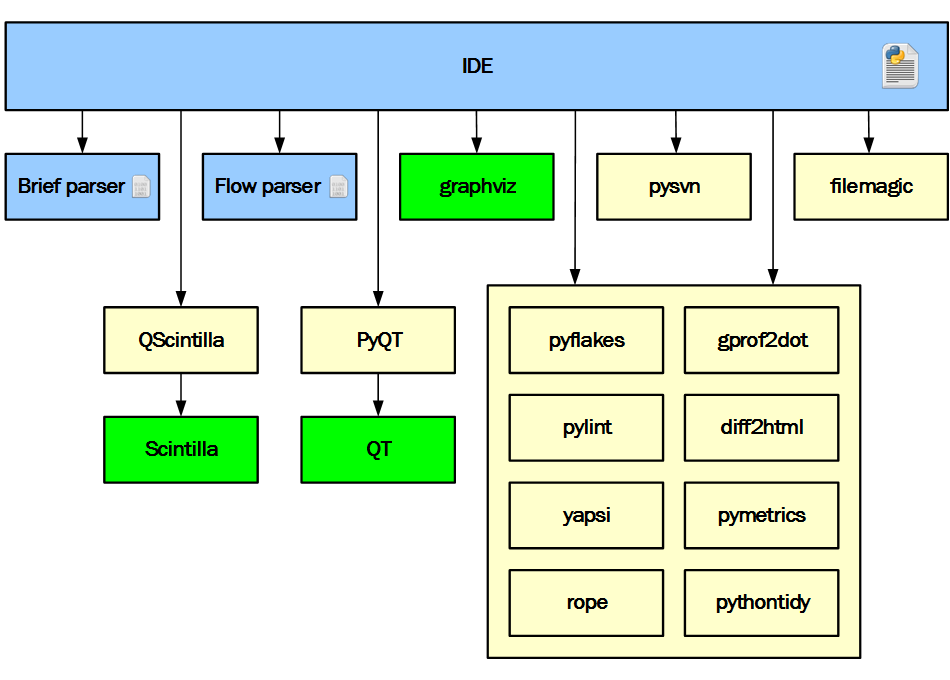
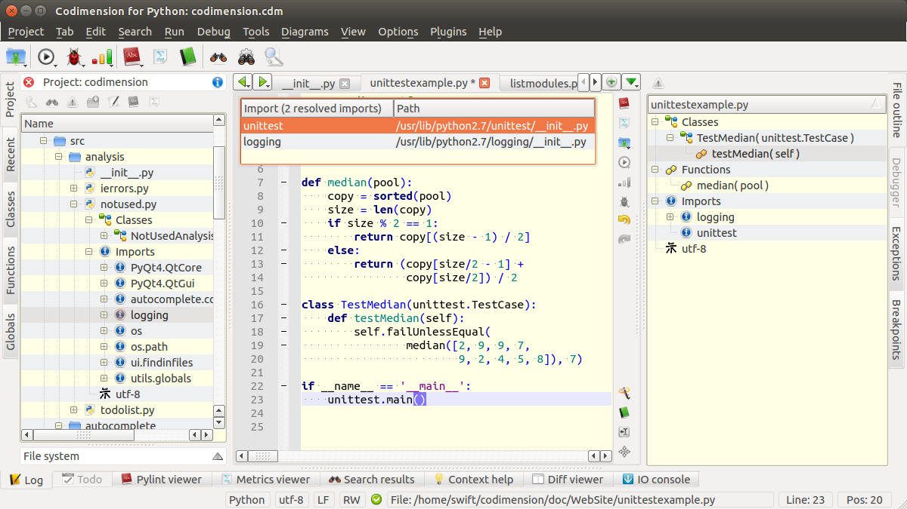
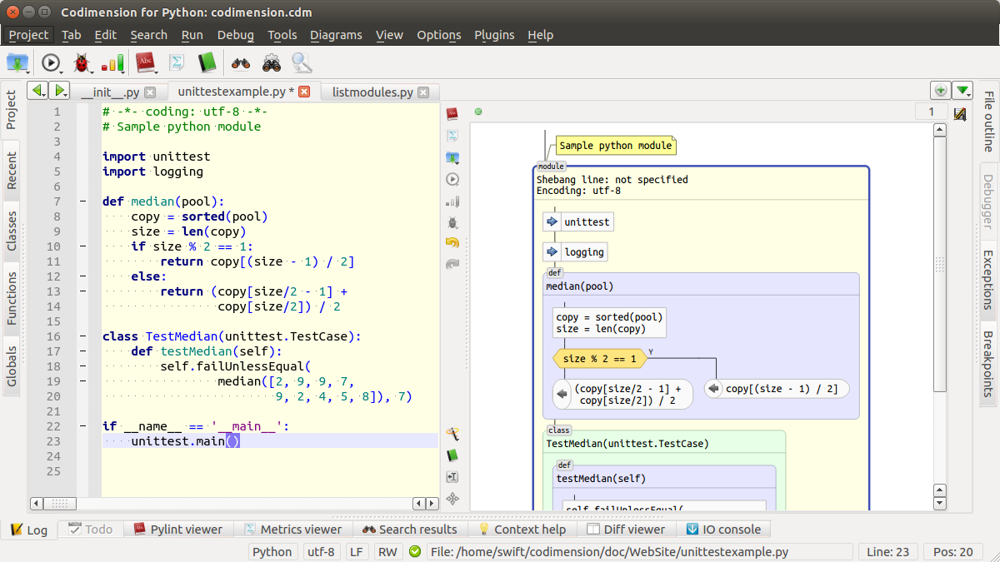
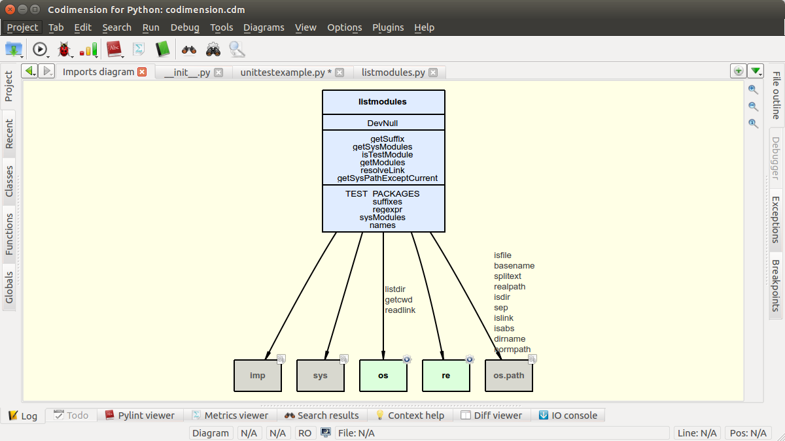
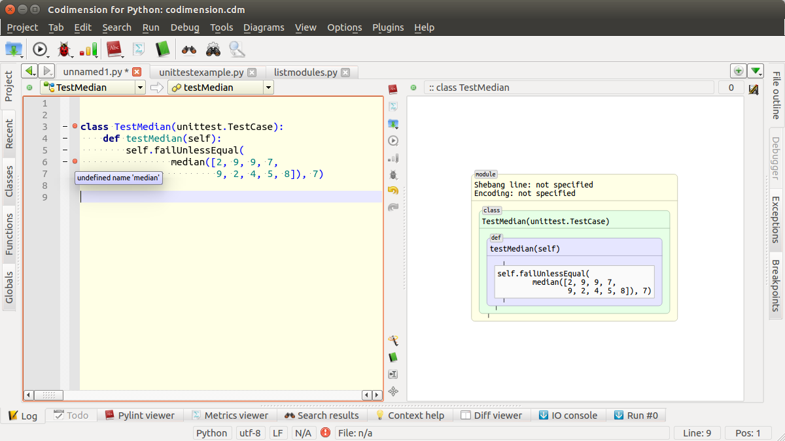
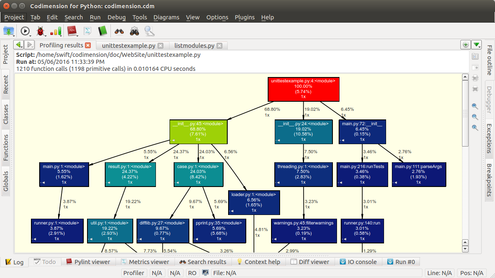

Codimension IDE Architecture
Overview
Note: this article covers the IDE version 3.0.0
From the very beginning the idea was to use as many third party components as possible. This idea came from the fact that very limited resources - both in terms of time and a number of developers - are available for the project.
Thus the only three components were developed within the project while all the others were used nearly as they were (in some cases patching was required). The diagram below shows in blue the parts developed within the Codimension IDE project.
Figure 1. IDE Architecture
The items in green on the diagram are third party binaries. The items in yellow are third party components written in Python.
Let's discuss the role of each component in more details.
Brief Python parser
The parser is developed within the Codimension project. The parser can get a Python code buffer or a a Python file, parse it and tell what was found in the code. The collected information is quite comprehensive. The parser collects pretty much all identifiable elements - classes and nested classes, functions and nested functions, imports, global variables, docstring, decorators etc.
In order to achieve the best possible performance the parser is written in C/C++ and the functionality is provided via a Python 2 extension module. More information about the brief parser can be found here.
The IDE uses the brief parser to provide structural information about a file or a currently edited buffer. For example, the screenshot below shows a few cases when the parser is used.
Figure 2. Brief Python Parser in Action
The project tab on the left shows the src/analysis/notused.py disk file content - a tree of elements is expanded when the + icon in front of a file is clicked.
The file outline tab on the right shows the currently edited buffer content - similarly to the project tab a tree of elements is expanded when + is clicked.
The text editor on the screenshot above has a dialogue with a list of resolved imports (it comes up when Ctrl+I is pressed). The source of information for the dialogue is the
brief parser as well.
There some other places where the parser is used, to name a few:
- Lists of classes, functions, and global variables in the project
- A generated dependency diagram for a module or all the Python files in a directory
- Analysis of what classes, functions or global variables are defined but not used
- etc.
Flow parser
The control flow parser is developed within the Codimension project. The parser can get a Python code buffer or a a Python file, parse it and provide a hierarchical representation of the code suitable for generating a flowchart diagram. The representation is based on fragments and each fragment tells where a certain recognized element starts and where it ends.
Similarly to the brief Python parser the control flow parser is written in C/C++ to achieve the best performance. The functionality is provided via a Python 2 extension module. More information about the control flow parser can be found here.
The IDE uses the control flow parser to draw a flowchart diagram for the current tab as shown on the screenshot below
Figure 3. Control Flow Python Parser in Action
The data collected by the control flow parser also lets to link the flowchart elements to the source code. For example, when the user double clicks on an element, the IDE extracts the line number in the source code that corresponds to the element, moves the focus to the text editor and moves the cursor to the appropriate line.
PyQt and QT Library
The QT library is used for drawing the IDE user interface. The bindings to Python are implemented within the PyQt project. Together they speed up the UI development considerably. There is an extensive documentation in the net of how to use QT and in the vast majority of cases the examples given for C++ could be converted to Python straight forward.
QScintilla and Scintilla
The Scintilla project is an open source editing component and there Python bindings for it implemented within the QScintilla project. Codimension uses QScintilla as the base for its main text editing component.
graphviz
Codimension uses the graphviz package to provide a layout for a few interactive diagrams.
Figure 4. Dependencies Diagram
The layout of the dependencies diagram shown on the screenshot above is done by the graphviz package. The IDE prepared a textual description for the diagram above and invoked graphviz. The collected output had the layout of the diagram so it was used to create a graphics scene with some interactive features. For example, the diagram supports double clicking on the items.
filemagic
The filemagic package is used to detect a file type. In front of each file in the project and file system browsers there are small icons specific for each file. In order to display an icon properly the filemagic package is invoked. Another example where a file type matters is a text search functionality. It makes no sense to search within binary files so they are excluded.
Essentially filemagic is a wrapper around libmagic, the library behind Unix file command.
pyflakes
The pyflakes package is used to quickly detect popular mistakes in the source code.
Figure 5. pyflakes in Action
Pyflakes does not detect all the problems in the code but works very fast. The pyflakes speed let to integrate the feature in a smooth way: a pause in typing the code is caught and pyflakes is invoked. The detected problems - if so - are highlighted as red dots on a text editor margin. When a mouse cursor hovers the dots a message is shown as a tooltip.
Sometimes files have more lines than a sceen can show. It is also possible that the problems are in lines which are currently not visible. So to give an immediate visual indication of the code state in terms of detected problems, there is one more UI element on the IDE status bar at the bottom. The figure above shows a hoverable and clickable red exclamation sign icon. If there are no detected problems then the icon is switched to a green one.
gprof2dot
Profiling results could be displayed in various ways and one of the most visually attractive is a graphics one. The gprof2dot project offers a nice way of representing the results as shown on a figure below.
Figure 6. gprof2dot
gprof2dot works together with graphvis and with some additional code the generated diagram becomes an interactive one. Each box on the diagram is clickable - the corresponding source code will be opened and the cursor will be moved to the appropriate line.
pylint
pylint is rather a standard de facto in checking Python files. pylint is slower than pyflakes but does a more comprehensive analysis of the code. The
IDE integrates pylint in a few places however the most popular is probably checking the current editing buffer. To do that Ctrl+L is to be pressed and the results will appear on
the pylint tab at the bottom.
pymetrics
Sometimes the code metrics need to be collected. This is when the pymetrics project helps. Similarly to pylint the IDE integrates
pymetrics in a few places however the most popular is collecting metrics for the current editing buffer. To do that Ctrl+K is to be pressed and the results will appear on the
pymetrics tab at the bottom.
Two ways of the results representation are available: a tree-like structure and a table representation. The information which is usually of the most interest is the McCabe complexity value.
yapsi
The yapsi package helps to implement the plugins subsystem of the IDE. There is some code on top of it to provide the system wide and user specific plugins support and conflicts resolution.
rope
The rope library provides various facilities to support important IDE features like:
- jumping to a symbol definition
- finding the symbol usage
- code completion
- etc
Note: the most up to date versions use jedi library instead.
diff2html
The diff2html script helps to represent the difference between two versions of the same file in a visually convenient way. In particular the script is used for:
- showing the difference before running pythontidy and after it
- showing the difference between two revisions of a file in the SVN plugin
Codimension IDE
The IDE integrates all the parts described above and more other things which are not mentioned. The smaller items were not included into this article because of the only reason: to avoid loosing the whole picture behind too many details. Nevertheless Codimension would not be possible without any of the part it relies on.